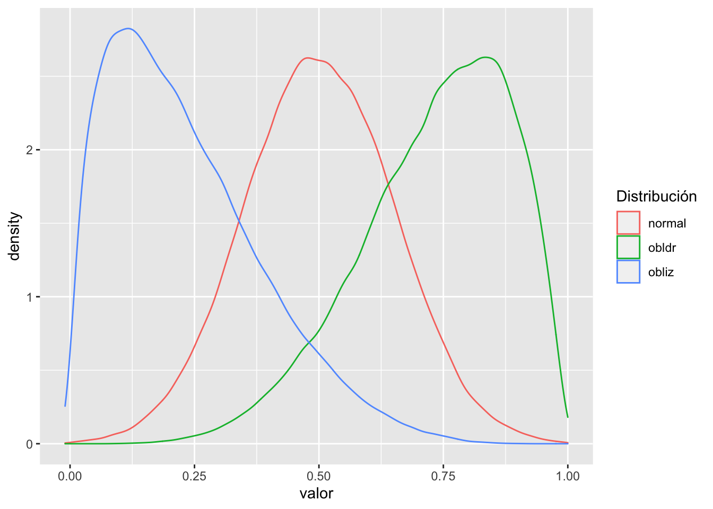

Fecha de la ultima revisión
## [1] "2020-08-02"Activar los Paquetes
library(ggplot2) # paquete para visualizar los datos
library(ggversa) # paquete para diferentes conjuntos de datos
library(modeest) # paquete para calcular la moda
library(pastecs) # paquete para análisis tiempo-espacial usado en ecología
library(psych) # paquete para análisis psicométrica, psicológica y de personalidad
library(knitr) # un grupo de función para incluyendo tablas bonitas con kable.
library(tidyverse)
library(gridExtra)
library(e1071)En los módulos de “Medidas de Tendencias Central” y “Medidas de Dispersión” se explicó donde proviene estos parámetros y como calcular estos. En este módulo aprenderemos diferentes funciones como calcular estos parámetros individualmente y herramienta como calcular todos y otros parámetros todo juntos.
Los indices que veremos aquí incluye
Aqui creamos un conjunto de datos de 100 datos con un promedio de 100 y una desviación estándar de 10. Nota que la función set.seed() es que el comienzo la simulación sea igual a cada vez que se corre, y se el mismo resultado. Esto se añade solamente cuando uno esta enseñando y que los resultados sean consistente.
set.seed(765765)
x=rnorm(100, 100, 10) #(100 datos, x=100, sd=10)
x=data.frame(x)
mean(x$x) # el promedio## [1] 101.0949sd(x$x) # la desviación estándar## [1] 9.819889min(x$x) # el valor mínimo## [1] 78.64092max(x$x) # el valor máximo## [1] 123.2455Usaremos datos que hemos visto en el modulo Producción de Gráficos.
Se necesita el archivo DownloadFestival que se encuentra debajo la pestaña de Los Datos. El ejemplo proviene de Field et al. (2014).
Una bióloga estaba preocupado por los posibles efectos sobre la salud de los que particpan a un festivales de música. Entonces, un año fue al Download Festival en el Reino Unido (Download Festival UK). Ella midió la higiene del los que participaron al concierto n= 810 durante el festival de 3 días. Cada día intentaba encontrar a todas las personas que censó el primer día. Los valores asignado fueron de 0 a 4 sobre el nivel de limpieza por como olia los participantes
- 0 = hueles como un cadáver.
- 4 = hueles a rosas dulces en un fresco día de primavera
library(readr)
DownloadFestival_No_Outlier_ <- read_csv("Data_files_csv/DownloadFestival(No Outlier).csv")
dlf=DownloadFestival_No_Outlier_ #usamos un nombre más corta para facilitar
head(dlf) # ver las 3 primeras filas| ticknumb | gender | day1 | day2 | day3 |
|---|---|---|---|---|
| 2.11e+03 | Male | 2.64 | 1.35 | 1.61 |
| 2.23e+03 | Female | 0.97 | 1.41 | 0.29 |
| 2.34e+03 | Male | 0.84 | ||
| 2.38e+03 | Female | 3.03 | ||
| 2.4e+03 | Female | 0.88 | 0.08 | |
| 2.40e+03 | Male | 0.85 |
Con los datos de los participantes al festival como en algunos diá hay participantes donde no tienen los datos se añadió un NA, es estos casos para que el análisis se logra hay que añadir a la función na.rm=TRUE que significa remover la NA. Para dar se cuenta remueve na.rm=TRUE cuando se usa el “día2” o “día3”, y evalúa que pasa.
mean(dlf$day2, na.rm=TRUE)## [1] 0.9609091sd(dlf$day1, na.rm=TRUE)## [1] 0.6935389min(dlf$day1, na.rm=TRUE)## [1] 0.02max(dlf$day1, na.rm=TRUE)## [1] 3.69median(dlf$day1, na.rm=TRUE)## [1] 1.79Para ver los estadístico mencionado arriba (menos la moda, oblicuidad y curtosis) se puede usar la función stat.desc() del paquete pastecs. Para facilitar la lectura de los valores se usa la función "round(x, 3), el tres en esta caso representa la cantidad de valores significativos que se demuestra. Si no usamos round() los valores aparece en notación científicas.
Nota que hay muchos más parámetros calculados. Aparece en la lista en orden el valor mínimo: min(), el valor máximo: max(), la mediana: median, el promedio: mean, la desviación estándar; std.dev entre otros.
round(stat.desc(dlf[,c("day1")]), 3) | day1 |
|---|
| 810 |
| 0 |
| 0 |
| 0.02 |
| 3.69 |
| 3.67 |
| 1.43e+03 |
| 1.79 |
| 1.77 |
| 0.024 |
| 0.048 |
| 0.481 |
| 0.694 |
| 0.392 |
Si uno quiere evaluar múltiples variables continua todas juntos se puede usar la misma función pero el componente c() se añade todas las variables de interes.
round(stat.desc(dlf[,c("day1","day2","day3")], basic=FALSE,norm=TRUE), digits=3) # reduce a 3 valores significativo| day1 | day2 | day3 |
|---|---|---|
| 1.79 | 0.79 | 0.76 |
| 1.77 | 0.961 | 0.977 |
| 0.024 | 0.044 | 0.064 |
| 0.048 | 0.087 | 0.127 |
| 0.481 | 0.52 | 0.504 |
| 0.694 | 0.721 | 0.71 |
| 0.392 | 0.75 | 0.727 |
| -0.004 | 1.08 | 1.01 |
| -0.026 | 3.61 | 2.31 |
| -0.422 | 0.755 | 0.595 |
| -1.23 | 1.26 | 0.686 |
| 0.996 | 0.908 | 0.908 |
| 0.032 | 0 | 0 |
Los cuantiles son los valores a intervalos específicos de una variable aleatoria continua. Los cuantiles son frecuentemente una mejor interpretación de la distribución cuando los valores no tienen una distribución normal. Típicamente, la distribución se divide en 4 partes con las siguientes partes (los cuantiles 0.25, 0.50 = la mediana, 0.75) y se define como cuartiles. Para meas detalle pueden ver el siguiente enlace https://en.wikipedia.org/wiki/Quantile.
En el siguiente ejemplo se demuestra como tulizar la función quantiles y seleccionar los cuantiles deseados con el comopnente de probs=c(x,x,x).
quantile(dlf$day1,probs=c(0.05, 0.1, 0.25, 0.5, 0.75, 0.95, 0.99), na.rm=TRUE)## 5% 10% 25% 50% 75% 95% 99%
## 0.5945 0.8490 1.3125 1.7900 2.2300 2.9055 3.3173Se puede usar también la función describe en el paquete pshych que le da automáticamente estos cuantiles.
describe(dlf$day1)| vars | n | mean | sd | median | trimmed | mad | min | max | range | skew | kurtosis | se |
|---|---|---|---|---|---|---|---|---|---|---|---|---|
| 1 | 810 | 1.77 | 0.694 | 1.79 | 1.77 | 0.697 | 0.02 | 3.69 | 3.67 | -0.00443 | -0.422 | 0.0244 |
El indice de oblicuidad es un indice que describe la simetría en una distribución alrededor de su promedio. Otra manera de describirlo es el tercer momento, por que los datos se poner a un exponente elevado al ^3.
La formula es la siguiente. Lo que se darán cuenta es muy similar a la varianza pero note que las diferencias se poner al ^3. Para meas información vea este enlace https://en.wikipedia.org/wiki/Skewness.
\[\frac{1}{N}\sum_{i=}^N\left(\frac{x_i-\overline{x}}{\sigma}\right)^3\]
Primero voy a crear tres conjuntos de datos
normal=rnorm(100000, .5, .15)
obliz=rbeta(100000, 1.5,5)
obldr=rbeta(100000, 5.5,2)
normal=as.tibble(normal)
obliz=as.tibble(obliz)
obldr=as.tibble(obldr)Ahora unimos los data frames y se añade nombres a las columnas
df=cbind(normal, obliz, obldr)
head(df, n=2)| value | value | value |
|---|---|---|
| 0.546 | 0.0481 | 0.743 |
| 0.593 | 0.02 | 0.915 |
df <- setNames(df, c("normal","obliz","obldr"))
head(df, n=2)| normal | obliz | obldr |
|---|---|---|
| 0.546 | 0.0481 | 0.743 |
| 0.593 | 0.02 | 0.915 |
library(tidyverse)
df2=df%>%
gather(key = "Distribución", value="valor", c(normal, obliz, obldr))
head(df2, n=3)| Distribución | valor |
|---|---|
| normal | 0.546 |
| normal | 0.593 |
| normal | 0.676 |
# unique(df2$Distribución) # función para ver el nombre de las variables en la columna DistribuciónAhora vamos a ver los datos un gráfico. Vemos que la distribución de los datos son muy diferentes, tanto la distribución en azul y verde están sesgado a unos valores y tienen una cola o valores más grande (azul) o pequeños (verde) que si fuese una distribución normal.
ggplot(df2, (aes(valor, colour=Distribución)))+
geom_density()+
xlim(-.01,1)
Ahora se calcula el indice de oblicuidad y comparamos los valores. Como regla cuando el nivel de oblicuidad esta entre
Ahora evaluamos la oblicuidad de los tres gráficos. se usa la función de skewness en el paquete e1071
Para los datos de una distribución normal el valor es muy cerca a cero. Para los datos sesgado a la izquierda el indice de oblicuidad es positivo y el sesgado a derecha es negativo.
library(e1071)
e1071::skewness(normal$value) # la oblicuidad de los datos de una distribución normal## [1] 0.008323573e1071::skewness(obliz$value) # la oblicuidad de los datos sesgado a la izquierda## [1] 0.8330537e1071::skewness(obldr$value) # la oblicuidad de los datos sesgado a la derecha## [1] -0.6469248El indice de curtosis es un índice que describe la cola de la una distribución alrededor de su promedio. Otra manera de describirlo es el cuarto momento, por que los datos se poner a un exponente elevado al ^4. El curtosis mide la propensidad de tener daos atípicos.
La formula es la siguiente. Lo que se darán cuenta es muy similar a la varianza pero note que las diferencias se poner al ^4. Para meas información vea este enlace https://www.wikiwand.com/en/Kurtosis.
\[\frac{1}{N}\sum_{i=}^N\left(\frac{x_i-\overline{x}}{\sigma}\right)^3\]
Primero voy a crear tres conjuntos de datos
library(PearsonDS)
library(rmutil)
momentsR=c(mean=0, variance=1, skewness=0, kurtosis=2)
momentsE=c(mean=0, variance=1, skewness=0, kurtosis=4)
normalR=rpearson(100000, moments=momentsR)
normalE=rpearson(100000, moments=momentsE)
Unif=runif(100000, -2,2)
normal=rnorm(100000, 0,1)
laplace=rlaplace(500000, m=0, s=1)
normal=as.tibble(normal)
normalR=as.tibble(normalR)
normalE=as.tibble(normalE)
Unif=as.tibble(Unif)
laplace=as.tibble(laplace)Ahora unimos los data frames y se añade nombres a las columnas
df=cbind(normal, normalR, normalE, Unif, laplace)
head(df, n=2)| value | value | value | value | value |
|---|---|---|---|---|
| -0.467 | -0.293 | -3.85 | -0.772 | -0.2 |
| 0.727 | -0.515 | 0.227 | 0.322 | 0.125 |
df <- setNames(df, c("normal","normalR","normalE", "Unif", "laplace"))
head(df, n=2)| normal | normalR | normalE | Unif | laplace |
|---|---|---|---|---|
| -0.467 | -0.293 | -3.85 | -0.772 | -0.2 |
| 0.727 | -0.515 | 0.227 | 0.322 | 0.125 |
library(tidyverse)
df2=df%>%
gather(key = "Distribución", value="valor", c(normal, normalR, normalE, Unif, laplace))
head(df2, n=3)| Distribución | valor |
|---|---|
| normal | -0.467 |
| normal | 0.727 |
| normal | 0.61 |
# unique(df2$Distribución) #función para ver el nombre de las variables en la columna DistribuciónAhora vamos a ver los datos en un gráfico. Vemos que la distribución de los datos son muy diferentes, Tiene que concentrar no en el pico de la distribución pero las colas de los datos. Nota la distribución normal que es de color amarillo, y comparar si la colas están por debajo o por encima de esta distribución normal.
Tanto la distribución uniforme (color rosa) y normal reducido (normalR, color azul) las curvas pasan de bajo la curva normal. Al contrarío la linea verde y roja son distribuciones que pasan por encima de la curva normal, entonces las colas son más predominante.
whole=ggplot(df2, (aes(valor, colour=Distribución)))+
geom_density(adjust=5)+
xlim(-5,5)
sub=ggplot(df2, (aes(valor, colour=Distribución)))+
geom_density()+
theme_bw() +
scale_x_continuous(limits=c(-5, 1)) +
scale_y_continuous(limits=c(0, .1)) +
theme(legend.position= "none")
sub + annotation_custom(
ggplotGrob(whole),
xmin = -1.8, xmax = 1.4, ymin = 0.005, ymax = 0.075)Ahora se calcula el indice de curtosis y comparamos los valores. Como regla el nivel de curtosis esta significativo si los valores de curtosis se enuentra en los siguientes rangos, y se acerca cero no hay curtosis (lo que uno espera para una distribución normal.
Ahora evaluamos la oblicuidad de los tres gráficos. se usa la función de kurtosis en el paquete e1071
Para los datos de una distribución normal el valor es muy cerca a cero. Para los datos que tienen exceso de cola el valor de curtosis es negativos y cuando el valor de curtosis es positivo hay exceso de datos en la cola.
library(e1071)
e1071::kurtosis(normal$value) # curtosis de los datos de una distribución normal## [1] 0.006270625e1071::kurtosis(normalR$value) # curtosis de los datos restringido## [1] -0.9963403e1071::kurtosis(normalE$value) # curtosis de los datos con más colas## [1] 0.9434295e1071::kurtosis(Unif$value) # curtosis de distribución informe, falta de colas## [1] -1.189785e1071::kurtosis(laplace$value) # curtosis de distribución Laplace, exceso de colas## [1] 3.033305